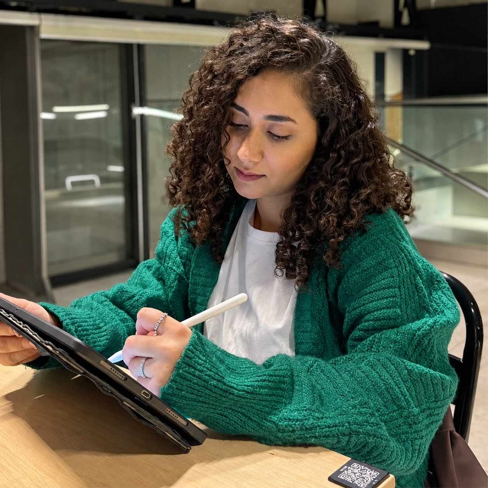

About · Background & Story
Bridging the weight of sculpture, the light of animation, and the tactility of illustration.
I am an illustrator, visual designer, and educator based in Tehran. My work centers on character illustration, brand identities, and packaging that people want to hold and keep.

The Trajectory
How three-dimensional form and cinematic worlds converged into packaging and illustration.
01 — The Sculptural Foundation: Thinking in Three Dimensions
My artistic training began in sculpture at the Faculty of Fine Arts, University of Tehran, after ranking 2nd in the National Practical Art Entrance Examination.
Sculpture fundamentally conditioned the way I observe objects and space. Working with physical materials taught me to feel weight, volume, tactile resistance, and the manner in which light wraps around a curved edge. When I approach packaging or product identity today, I never think of it as a flat two-dimensional surface on a screen. I visualize a tangible object that someone picks up, holds in their hands, turns around, and lives with.
02 — The Animation Years: Atmosphere, Light & World-Building
Parallel to my academic studies, my journey in 2D animation — beginning with a diploma from the historic Isfahan Fine Arts School and advancing through years as a Background & Environment Artist at Hoorakhsh Studios and Gonbad Kabood Studio — grounded me in visual storytelling.
In animation, a background is never passive backdrop; it carries the emotional temperature, the passage of time, and the world where characters belong. Painting cinematic backgrounds demanded deep discipline in atmospheric lighting, color palettes, and environmental composition.
03 — The Convergence: Giving Objects a Voice & Personality
Transitioning into commercial illustration, brand identity, and packaging was not a shift in direction, but an organic synthesis. It is where my sculptural instinct for physical objects meets my animation background in character and atmosphere.
In Mimo, a sparkling soda is given life through individual characters, where each flavor carries its own personality, warmth, and hand-drawn doodles. In Alef Cafe, five coffee pouches become daily companions, weaving human moments and Iranian culture directly into Persian letterforms.
By connecting these disciplines, I create packaging and brand identities that feel tactile, storied, and genuinely human.
04 — Teaching & Observation
Teaching has remained an essential pillar of my practice. Mentoring students for practical entrance examinations and instructing background design at the Kharazmi Vocational School keeps my foundations rigorous — continuously breaking down anatomy, perspective, composition, and visual communication to their purest principles.
Experience
Selected studio & academic background
Studio & Design Practice
- 2023 — 2026
-
Background Artist
Hoorakhsh Studios · 3.5+ years
Designed environmental backgrounds, mood paintings, and cinematic lighting for major 2D animation productions.
- 2024 — 2025
-
Background Artist
Gonbad Kabood Studio
Environment concept art, background layouts, and atmospheric styling for stylized 2D animation.
- 2024
-
2D Designer & Illustrator
Bunion3D (New Zealand) · Remote
Created 2D visual assets, character concepts, and illustration design.
Teaching & Mentorship
- 2021 — Present
-
Specialist Art Instructor
Private Practice
Mentoring students for the National Practical Art Entrance Examination with focus on observational drawing, creative visual expression, and composition.
- 2025 — 2026
-
Teacher of Scene & Background Design
Kharazmi Vocational School
Instruction in spatial design, perspective, environment painting, and narrative staging for animation students.
Education & Recognition
- 2019 — 2024
- B.A. in Sculpture University of Tehran · Faculty of Fine Arts
- 2016 — 2019
- Diploma in Animation Isfahan Fine Arts School
- Honors
- Rank 2 — National Practical Art Entrance Examination Ministry of Science, Research & Technology
- Awards
- 1st Place (Regional) & 2nd Place (Provincial) Student 2D Traditional Animation Competition
- Courses
- Certifications in Digital Painting & Animation Background Design Zima Art School
Toolkit & Capabilities
- Disciplines
- Packaging Design · Brand Identity · Character Illustration · Background & Environment Art · Visual Development · Art Direction
- Software
- Adobe Photoshop · Adobe Illustrator · Toon Boom Harmony · Blender · Adobe Premiere
- Languages
- English · Persian
Collaboration
Available for packaging, brand identity, and illustration commissions.
Based in Tehran, working worldwide.